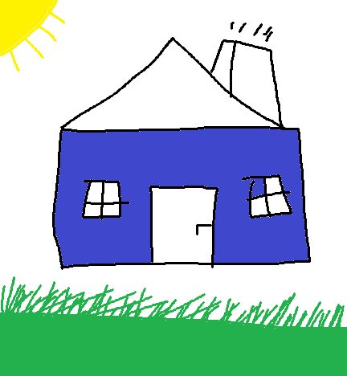

Vajuta pildil päikese, ümmarguse akna, korsteni, katuse, muru ja ukse peale ja siia tuleb väike kirjeldus...

Muru on tihe ja madal heintaimedest koosnev ja sageli niidetav ühtlane taimkate. Muru on üks aedade ja parkide levinumaid haljastuselemente. Muru kasutatakse ka mitmesuguste spordiväljakute kattena.